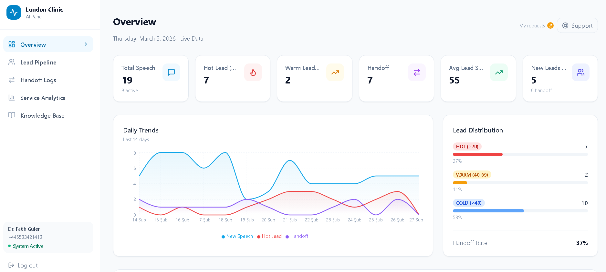

01
AI voice agent
Çağrıları anında karşılar, uygunluğu kontrol eder, randevu talebini toplar ve notları sisteme işler.
Klinikler için AI altyapısı
STOAIX; inbound çağrıları, kaçan leadleri, WhatsApp takiplerini ve randevu operasyonunu AI agentlarla yönetir. Klinik ekibi sadece hastaya ve tedaviye odaklanır.
Türkiye ve global klinik operasyonları için tasarlandı.

AI ve klinik operasyon ekosistemiyle uyumlu yapı
Platform
Voice agent, chatbot, CRM, takip ve raporlama aynı merkezden çalışır. STOAIX mevcut sistemlere bağlanır, eksik olan yerde kendi operasyon katmanını sağlar.
01
Çağrıları anında karşılar, uygunluğu kontrol eder, randevu talebini toplar ve notları sisteme işler.
02
Form, reklam ve WhatsApp leadleri bekletmeden döner; ilgiyi kaybetmeden görüşmeye taşır.
03
Hasta hareketleri, ekip performansı ve kanal verileri tek kontrol panelinde izlenir.
Akış
Sistem hasta adayını yakalar, doğru senaryoyla konuşur, bilgiyi temiz tutar ve ekibe aksiyon alınabilir kayıt bırakır.
Telefon, WhatsApp, form veya reklam leadi aynı hasta akışına düşer.
Hasta ihtiyacı, uygunluk, hizmet soruları ve randevu niyeti doğal şekilde yönetilir.
Konuşma özeti, randevu bilgisi ve takip durumu otomatik olarak kayda işlenir.
Dashboard, hangi hastanın hangi aşamada olduğunu sade ve gerçek zamanlı gösterir.
Dashboard
STOAIX dashboardu; çağrı kayıtlarını, hasta durumlarını, lead kaynaklarını ve ekip çıktısını tek yerde toplar.
Demo
15 dakikalık görüşmede çağrı senaryonuzu, dashboard akışını ve mevcut CRM bağlantılarınızı birlikte netleştirelim.